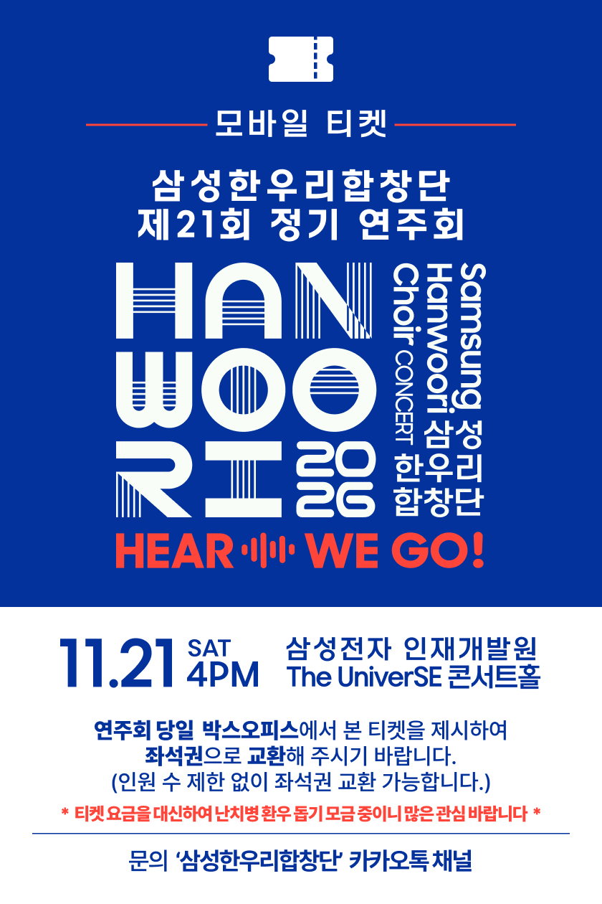

01
HEAR
The Voices
- Now is the Month of MayingT. Morley
- KyrieS. Dobrogosz
- LullabyD. Elder
- JoshuaArr. N. Luboff
삼성한우리합창단 제21회 정기연주회

클래식부터 영화 속 선율까지.
The Voices
In Harmony
Beyond Imagination
상세 소개는 추후 안내합니다.
합창
지휘
피아노
협연
안무
음악으로 전하는 화합과 감동,
삼성한우리합창단입니다.
2003년 8월, 음악을 사랑하는 삼성그룹 임직원들이 자발적으로 모여 창단했습니다. 정통 클래식부터 현대 가요까지 폭넓은 레퍼토리로 관객과 만나고 있습니다.
정기연주회와 기획 공연, 자선 연주를 이어오며 매년 공연을 통해 난치병 환우를 위한 기부 활동도 함께하고 있습니다. 단원들의 열정과 우정, 음악에 대한 사랑으로 더 많은 사람들과 새로운 울림을 나누고자 합니다.
티켓을 휴대폰에 저장해 주세요.
공연 당일 박스오피스에서 보여주시면 좌석권으로 교환해 드립니다.
저장되지 않으면 ‘티켓 보기’를 열고 이미지를 길게 눌러 저장해 주세요.
